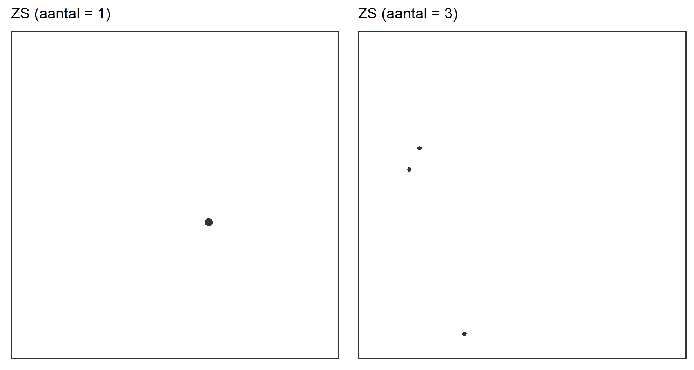
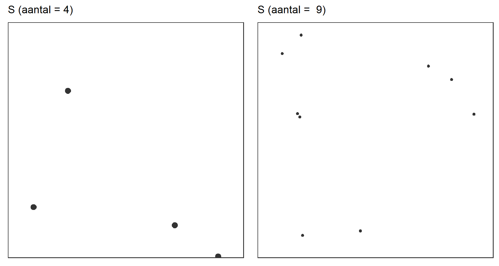
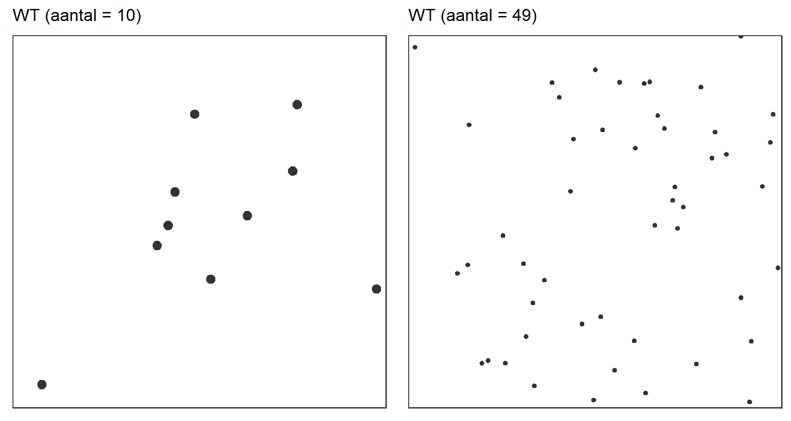
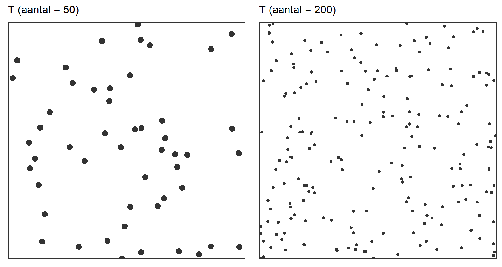
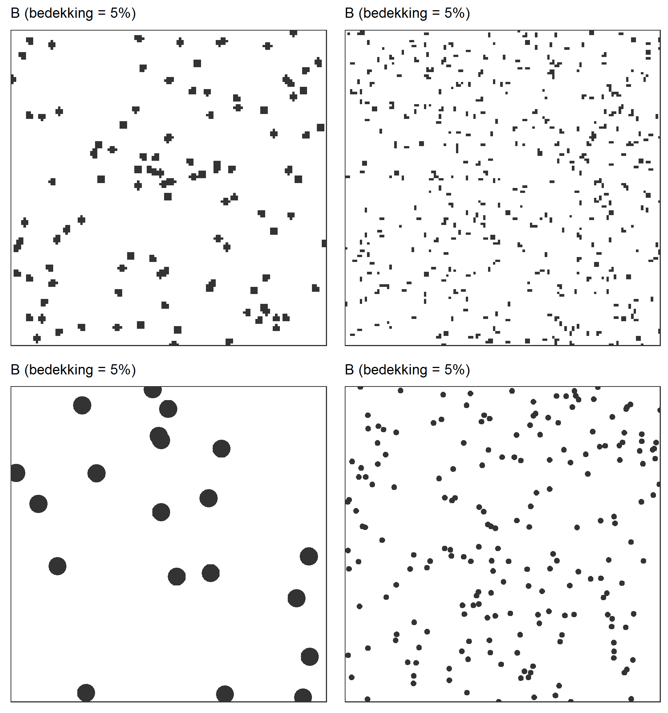
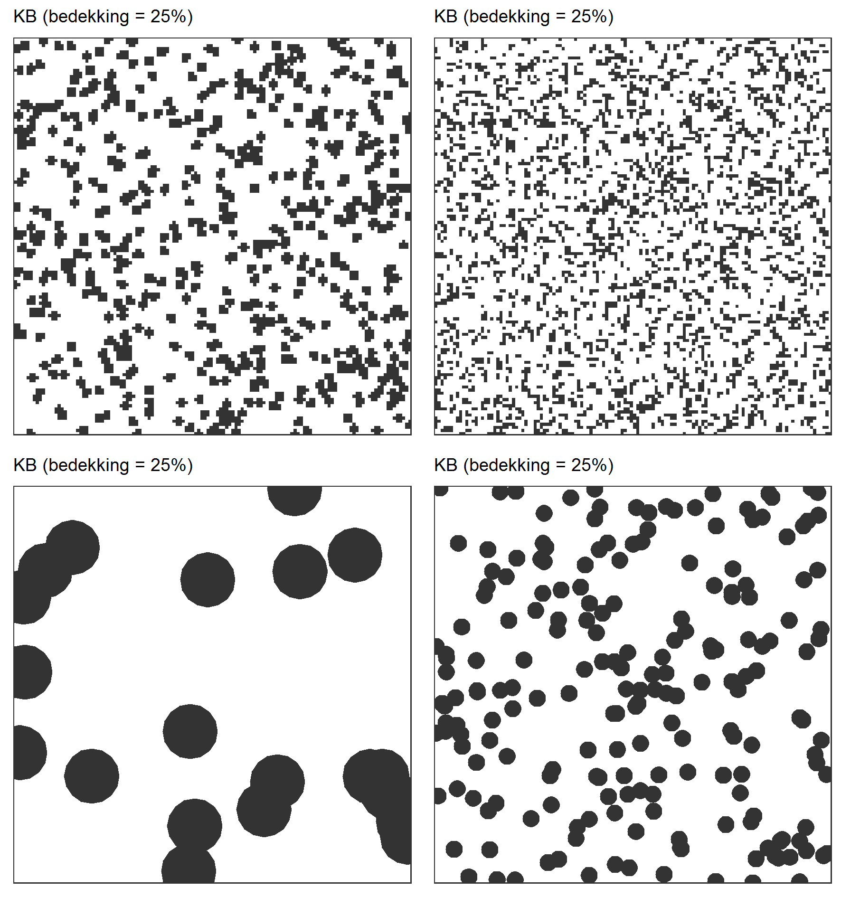
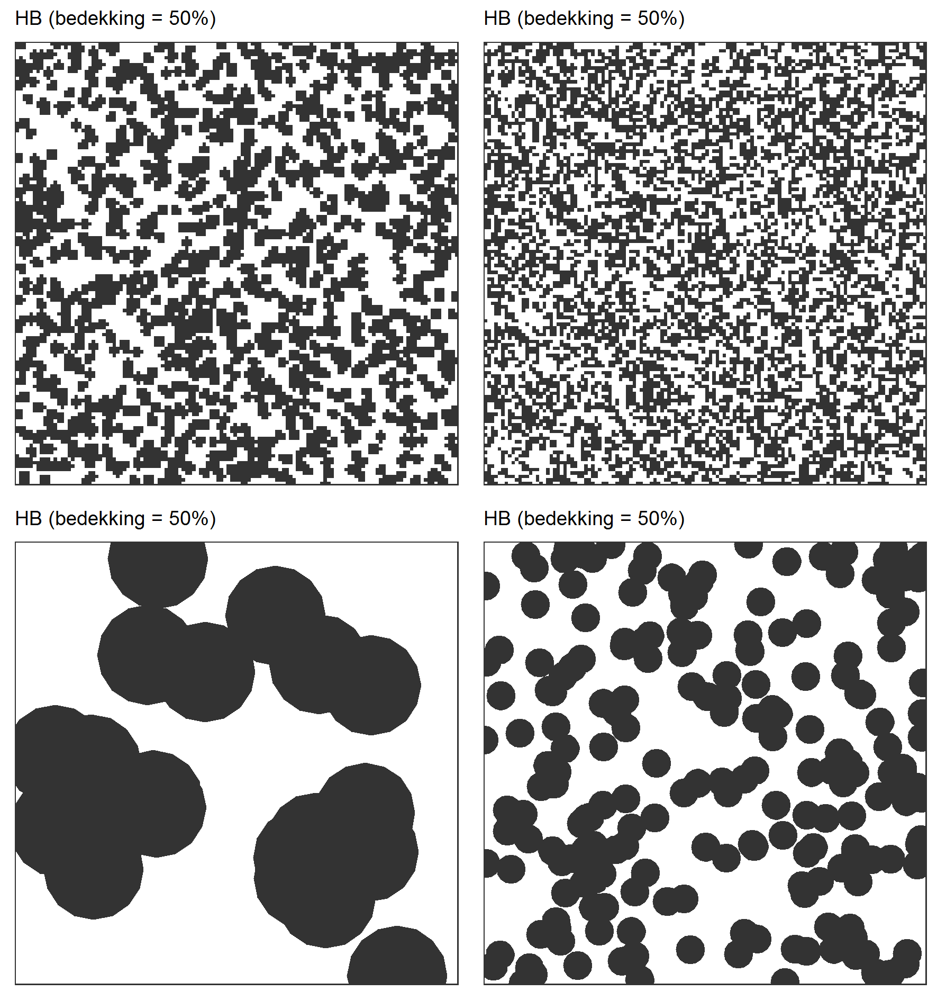

Veldprotocol voor vegetatie-opnames in grote proefvlakken en percelen met behulp van de beheermonitoringschaal
Oosterlynck, Patrik
 0000-0002-5712-0770
0000-0002-5712-0770
Hans Van Calster
0000-0001-8595-8426
2023-11-28
Metadata
| reviewers | documentbeheerder | protocolcode | versienummer | taal | thema |
|---|---|---|---|---|---|
| Toon Westra, Steven De Saeger | Patrik Oosterlynck | sfp-407-nl | 2024.02 | nl | vegetation |
Controleer deze tabel om te zien of een meer recente versie beschikbaar is.
1 Wijzigingen t.o.v. vorige versies
1.1 2024.02
Dit is de eerste versie van dit protocol
3 Onderwerp
3.1 Definities en afkortingen
Abundantie of densiteit = een maat voor de talrijkheid: abundantie wordt gebruikt om aan te geven hoe talrijk een soort voorkomt, en is meestal gekoppeld aan een bepaalde oppervlakte (densiteit). Het is het aantal individuen of andere teleenheden (bv. scheuten) van een soort per oppervlakte. Deze term wordt bijvoorbeeld gebruikt in de vegetatiekunde, waar verschillende systemen bestaan om de abundantie van plantensoorten in de vegetatie aan te geven.
Aquatische vegetatie = watergebonden vegetatie (waterplantvegetatie - hydrofyten), al dan niet drijvend of (gedeeltelijk) ondergedoken in de waterkolom.
Bedekking = een maat van voorkomen die meer gelinkt is met biomassa (een soort kan bijvoorbeeld zeer talrijk voorkomen maar met lage biomassa/bedekking): de bedekking van een plantensoort (of laag van de vegetatie, bv. boomlaag) is de proportie van de bodem die bedekt is door een soort, indien alle andere soorten verwijderd zouden worden. M.a.w. het is de verticale projectie van alle bovengrondse plantendelen van alle individuen van een soort op de bodem. De bedekking wordt uitgedrukt als een proportie of een percentage.
Bedekkingsschaal = een meestal ordinale schaal die gebruikt wordt om in het veld voor een plantensoort de visueel ingeschatte bedekking te noteren. Sommige schalen zijn een combinatie van klassen voor bedekkingspercentages en klassen voor abundanties bij lage bedekkingen. Elke klasse in de ordinale schaal krijgt een code die genoteerd wordt.
Vegetatiegelaagdheid = verticale organisatie van de vegetatie. Bij een vegetatie-opname wordt meestal een onderscheid gemaakt in de verschillende structuurlagen (bv. moslaag, kruidlaag, struiklaag en boomlaag). De kruidlaag omvat alle niet-houtige gewassen en houtige gewassen tot maximaal 80 cm, de struiklaag omvat alle houtige gewassen tussen 80 cm en 6 m. Lianen worden afhankelijk van hun hoogte tot de kruid-, struik- of boomlaag gerekend. De boomlaag bestaat uit houtige planten hoger dan 6 m. Voor bossen ligt de opdeling tussen kruid- en struiklaag op 2 m, voor struik- en boomlaag op 8 m.
Proefvlak = deel van het terrein waarbinnen de waarnemingen gedaan worden. Het heeft een vooraf vastgelegde vorm, grootte en oriëntatie.
PQ = permanent quadraat: een proefvlak dat meermaals in de tijd wordt opgenomen, en dus resulteert in een tijdsreeks van vegetatie-opnames op éénzelfde locatie
Habitatvlek = een afgebakende zone waarbinnen een homogeen vegetatietype voorkomt. De afbakening gebeurt op basis van karteerregels die betrekking hebben op een fytosociologische definitie. Een synoniem hiervoor is habitatlocatie.
(Semi-)terrestrische vegetatie = Niet-aquatische vegetaties (waterplanten - hydrofyten) die aan land gebonden zijn, zij wortelen minstens in de bodem.
Soortensamenstelling = de lijst van soorten die voorkomen binnen het proefvlak/onderzochte perceel.
Strooisellaag = liggend afgestorven plantenmateriaal bovenop de bodem, niet vasthangend aan de moederplant waarin organisch materiaal nog herkenbaar te vinden is. Strooisel omvat dus bladeren, stengels, twijgen en andere houtachtige plantenresten, zowel intact en herkenbaar materiaal als gedeeltelijk gecomposteerd en gefragmenteerd materiaal.
Vegetatie-opname = beschrijving van de vegetatiesamenstelling door middel van een volledige lijst van de aanwezige soorten en de mate waarin ze voorkomen (biomassa, densiteit, bedekking, …)
3.2 Doelstelling en toepassingsgebied
De beheermonitoringsschaal wordt gebruikt voor het schatten van de mate van voorkomen van plantensoorten over grotere oppervlaktes (grootte-orde van 1000 m² tot enkele hectares), zoals een proefvlakcirkel van 1000 m², (delen van) gebruikspercelen, beheerblokken, vegetatie-eenheden. De schaal heeft zowel kenmerken van de klassieke bedekkingsschalen, zoals de schaal van Londo, die gebruikt wordt voor kleinere proefvlakken (zie protocol sfp-401-nl versie 2023.03), als van de Tansley-schaal, die ook courant ingezet wordt bij het inventariseren voor grotere oppervlaktes (protocol nog te ontwikkelen). Net zoals bij een klassieke vegetatie-opname (protocol sfp-401-nl versie 2023.03), gaat het hier om een meer kwantitatief gedefinieerde schaal, echter met minder onderverdelingen als bv. de Londo-schaal. In overeenstemming met een klassieke vegetatie-opname (protocol sfp-401-nl versie 2023.03), maar in tegenstelling tot de Tansley-schaal methode, is de beheermonitoringschaal relatief ten opzichte van de oppervlakte waarover men een uitspraak doet. Vergelijkbaar met de Tansley-schaal methode, heeft de beheermonitoringschaal een aantal aanpassingen waarmee vaak voorkomende problemen bij inschattingen over grotere oppervlaktes kunnen ondervangen worden (bv lokaal afwijkende vegetatie, afwijkende randen, etc.). Wanneer een grotere oppervlakte (bv. een gebruiksperceel) bekeken wordt, geeft dit een completer beeld van de soortensamenstelling (wat positief is voor de bruikbaarheid van de gegevens op perceelsniveau), maar de inschattingen van de bedekking worden moeilijker waardoor de reproduceerbaarheid lager is. Enkele voorbeelden van projecten waar deze methode (of een afgeleide vorm ervan) gebruikt werd, zijn de graslandverificatie in kader van het mestactieplan en de inventarisatie van het historisch permanent grasland in de polders (De Saeger et al. (2014); Vriens et al. (2011)).
4 Beperkingen van het protocol
Indien deze procedure ingezet wordt voor monitoring zijn bijkomende afspraken over de detailgraad, hoe het terrein te doorkruisen en het tijdstip van herbezoek aangewezen om de reproduceerbaarheid te verhogen.
Omdat er densiteiten (aantalen/oppervlakte-eenheid) worden gebruikt dient de teleenheid duidelijk omschreven te worden. Deze is afhankelijk van de groeivorm van de plantensoort (bv. zijn alle bladeren van een adelaarsvaren één teleenheid, ondergronds verbonden door een wortelstok, of dienen we elk afzonderlijk blad als teleenheid te rekenen) zie ook bij hoofdstuk 8 Werkwijze. Alle vegetatie-opnames dienen uitgevoerd te worden in het optimale vegetatieseizoen. Dit is afhankelijk van het vegetatietype. Factoren die hierbij een rol spelen zijn o.a. biomassaproductie, bloei van relevante soorten, (maai)beheer en toegankelijkheid. In Figuur 4.1 wordt per vegetatietype een indicatie gegeven van de optimale inventarisatieperiode.
Figuur 4.1: Weergave van de optimale en suboptimale inventarisatieperiode per biotoopgroep (naar Vriens et al. (2011))
Daarnaast dient er regelmatig terugkoppeling en overleg te zijn tussen de verschillende waarnemers over de afspraken om de variatie tussen de waarnemers zo laag mogelijk te houden. Bij gegevensverwerking moet rekening worden gehouden met de semi-kwantitatieve aard van de beheermonitoringsschaal en het toepassingsgebied ervan. Een mathematische omzetting naar procentuele bedekking ten behoeve van bijvoorbeeld een gegevensanalyse, is mogelijk en is voorzien in INBOVEG (zie Bijlage B), maar hiermee moet omzichtig omgegaan worden i.v.m. schijnnauwkeurigheid van de toegekende waarden. Een numerieke verwerking ten behoeve van een vegetatieclassificatie ligt buiten het toepassingsgebied en wordt beter vermeden. Men dient er immers rekening mee te houden dat opnames die met deze methode worden gemaakt niet steeds betrekking hebben op homogene vegetaties (dit is doorgaans geen probleem voor syntaxa op niveau van alliantie of ordes, maar mogelijk wel op associatieniveau).
Voor aquatische vegetaties van stromende wateren wordt verwezen naar protocol sfp-403-nl versie 2023.05 (Vegetatieopname en LSVI-bepaling habitat 3260). Voor vegetatie-opnames in kleinere proefvlakken wordt verwezen naar protocol sfp-401-nl versie 2023.03 (Klassieke vegetatieopname in een proefvlak aan de hand van visuele inschattingen van bedekking van soorten in (semi-)terrestrische vegetatie). Voor opnames met behulp van de Tansley schaal moet nog een protocol opgesteld worden.
5 Principe
Naar Sutherland (2006), De Cock et al. (2008) en Demeulenaere et al. (2002).
De beheermonitoringsschaal zoals in dit protocol beschreven is een herwerking van de methode die voorgesteld is in Demeulenaere et al. (2002). Naast het herbenoemen van een aantal taalkundig verwarrende categorienamen, zijn er ook naar indicatieve bedekking en abundanties lichte aanpassingen gebeurd. De beheermonitoringschaal is in essentie een vorm van de Londo of Braun-Blanquet schaal (zie protocol sfp-401-nl versie 2023.03) maar aangepast voor het maken van vegetatie-opnames over grotere oppervlaktes. We bevelen opnames van dit type aan voor inventarisaties van gebruikspercelen in de range van 0.1 ha tot 5 ha. Het is daarbij minder de bedoeling om de laatste soort te vinden in een perceel maar eerder om op een relatief snelle wijze de vegetatiesamenstelling van een relatief grotere oppervlakte goed te beschrijven.
De codes van de beheermonitoringschaal zien er als volgt uit:
| Code | Naam | Densiteit per ha | Indicatieve bedekking |
|---|---|---|---|
| ZS | Zeer Schaars | 1-3 individu(en) | <<5% |
| S | Schaars | 4-9 individuen | <<5% |
| WT | Weinig Talrijk | 10-49 individuen | <<5% |
| T | Talrijk | >= 50 individuen | <5% |
| B | Bedekkend | niet van belang | 5-25% |
| KB | Kwartbedekkend | niet van belang | 25-50% |
| HB | Halfbedekkend | niet van belang | 50-75% |
| D | Dominant | niet van belang | >=75% |
Bij de beheermonitoringschaal worden zowel de relatieve abundantie (densiteit) als de bedekking van soorten betrokken ter begrenzing van de verschillende categorieën om zo een enigszins eenduidige interpretatie van een code mogelijk te maken en daarmee de vergelijkbaarheid van de gegevens te verhogen. Vanaf een soort minstens 5% bedekt, worden enkel de codes vanaf B gebruikt (ook al gaat het maar om 1 of enkele individuen). De densiteiten zijn geformuleerd voor oppervlaktes van om en bij 1 ha. Indien het bestudeerde perceel opvallend groter is dan 1 ha, dienen de indicatieve klassegrenzen vermenigvuldigd te worden met een factor evenredig aan de oppervlaktetoename (bv. voor een grasland van 2 ha wordt de ondergrens van talrijk >100 individuen, berekend uit tweemaal >50 individuen). Voor proefvlakken of percelen kleiner dan 1 ha kan met de standaard klassegrenzen verder gewerkt worden, tenzij daar andere afspraken over gemaakt zouden worden.
Afspraken met betrekking tot de teleenheid/individuen
Voor de categorieën waarbij densiteiten relevant zijn, is het van belang om de teleenheid goed te definiëren. Eén pol van een polvormende soort wordt als 1 teleenheid/individu gerekend. Polvormende soorten zijn bv. pijpenstrootje, pitrus, zompzegge, elzenzegge, pluimzegge, buntgras, veelbloemige veldbies, bochtige smele, … Bij het geclusterd voorkomen van soorten die geen pollen vormen, maar mogelijks wel via rhizomen of ondergrondse worteluitlopers verbonden zijn, worden steeds de individuele bovengrondse delen geteld voor het benaderen van de densiteit (bv. adelaarsvaren, gewoon struisgras, salomonszegel, …).
Net zoals bij de meeste visuele bedekkingsschalen is de beheermonitoringsschaal opgebouwd volgens een geometrische reeks (afstand tussen opeenvolgende klassen is klein bij lage abundantie en wordt groter bij hogere abundantie). Het menselijk oog kan immers gemakkelijker verschillen in de lagere densiteiten onderscheiden. Een verschil tussen 2 en 8 individuen blijft gemakkelijk waarneembaar, terwijl een verschil tussen 90 en 110 planten visueel amper in te schatten is.
In Bijlage A staan figuren ter visuele ondersteuning van de codes van de beheermonitoringschaal. Deze geven een impressie van de ondergrens van het aantal plantenindividuen per eenheid die je effectief waarneemt tijdens een inventarisatie. Ze zijn niet te interpreteren als de (veronderstelde) effectieve aantallen (die quasi altijd hoger zijn dan hetgeen waargenomen wordt).
Lokaal afwijkende vegetatiepatronen
Een proefvlak- of perceelsbeschrijving met de beheermonitoringsschaal laat toe om lokale variatie in de vegetatiesamenstelling tot op zekere hoogte te beschrijven. Door middel van een suffix aan een code toe te voegen, kan het lokaal voorkomen van soorten in afwijkende vegetatiedelen binnen dezelfde inventarisatie-eenheid specifiek geduid worden (bv. de toegangszone van een grasland met tredsoorten, poel, open plek in bossen, …). Suffix /2 heeft betrekking op een afwijkende vegetatiesamenstelling in 1/4de tot 1/2de van de inventarisatie-eenheid, suffix /4 betreft 1/8ste tot 1/4de en suffix /8 1/8ste of minder van de oppervlakte. In Bijlage A worden enkele figuren ter illustratie van dit principe getoond. Het duiden van dergelijk lokaal voorkomen wordt niet toegepast in min of meer homogene vegetaties of mozaïeken met een uitgesproken herhaalpatroon. Mogelijke voorbeelden waar dit dus niet toegepast wordt zijn bossen op rabatten, buntgrasvegetaties in stuifduin, homogeen zuur bossen waar de typische soorten slechts schaars aanwezig zijn, e.a. Deze methode voor lokale vegetatiepatronen wordt ook niet gehanteerd voor vegetatieverschillen die zich enkel voordoen in de randen. Daartoe maken we gebruik van het suffix R in combinatie met een schaalcode (bv. BR: Bedekkend in de Rand). Zie ook Bijlage A. Bijgevolg wordt een zeker breedte vanaf de rand (afhankelijk van de breedte van de waargenomen randeffecten) buiten beschouwing gelaten voor de rest van de opname. Afhankelijk van de doelstellingen van het project kan er voor gekozen worden om de randen al dan niet altijd afzonderlijk te beschrijven of om dat enkel in bepaalde (ecologische relevante) gevallen te doen.
Hieronder worden alle mogelijk codecombinaties voor lokale variatie in een proefvlak of perceel weergegeven:
| Codes | Naam |
|---|---|
| ZS | Zeer Schaars |
| ZS2 | Zeer Schaars in 1/4 tot 1/2 van het proefvlak |
| ZS4 | Zeer Schaars in 1/8 tot 1/4 van het proefvlak |
| ZS8 | Zeer Schaars in minder dan 1/8 van het proefvlak |
| ZSR | Zeer Schaars in de rand van het proefvlak |
| S | Schaars |
| S2 | Schaars in 1/4 tot 1/2 van het proefvlak |
| S4 | Schaars in 1/8 tot 1/4 van het proefvlak |
| S8 | Schaars in minder dan 1/8 van het proefvlak |
| SR | Schaars in de rand van het proefvlak |
| WT | Weinig Talrijk |
| WT2 | Weinig Talrijk in 1/4 tot 1/2 van het proefvlak |
| WT4 | Weinig Talrijk in 1/8 tot 1/4 van het proefvlak |
| WT8 | Weinig Talrijk in minder dan 1/8 van het proefvlak |
| WTR | Weinig Talrijk in de rand van het proefvlak |
| T | Talrijk |
| T2 | Talrijk in 1/4 tot 1/2 van het proefvlak |
| T4 | Talrijk in 1/4 tot 1/8 van het proefvlak |
| T8 | Talrijk in minder dan 1/8 van het proefvlak |
| TR | Talrijk in de rand van het proefvlak |
| B | Bedekkend |
| B2 | Bedekkend in 1/4 tot 1/2 van het proefvlak |
| B4 | Bedekkend in 1/8 tot 1/4 van het proefvlak |
| B8 | Bedekkend in minder dan 1/8 van het proefvlak |
| BR | Bedekkend in de rand van het proefvlak |
| KB | Kwartbedekkend |
| KB2 | Kwartbedekkend in 1/4 tot 1/2 van het proefvlak |
| KB4 | Kwartbedekkend in 1/8 tot 1/4 van het proefvlak |
| KB8 | Kwartbedekkend in minder dan 1/8 van het proefvlak |
| KBR | Kwartbedekkend in de rand van het proefvlak |
| HB | Halfbedekkend |
| HB2 | Halfbedekkend in 1/4 tot 1/2 van het proefvlak |
| HB4 | Halfbedekkend in 1/8 tot 1/4 van het proefvlak |
| HB8 | Halfbedekkend in minder dan 1/8 van het proefvlak |
| HBR | Halfbedekkend in de rand van het proefvlak |
| D | Dominant |
| D2 | Dominant in 1/4 tot 1/2 van het proefvlak |
| D4 | Dominant in 1/8 tot 1/4 van het proefvlak |
| D8 | Dominant in minder dan 1/8 van het proefvlak |
| DR | Dominant in de rand van het proefvlak |
Vegetatielagen
Net zoals bij een klassieke opname, kan bij een opname van dit type ook de vegetatiegelaagdheid worden weergegeven. Het betreft meer bepaald: moslaag, kruidlaag, struiklaag, boomlaag. Dit geeft een overzicht van de verticale structuur van de vegetatie in het perceel. Bovendien laat het toe om de individuele plantensoorten te wegen in functie van hun aandeel in de afzonderlijke structuurlagen. De hoeveelheid open bodem (vegetatieloze bodem of water) inschatten geeft bijkomende informatie betreffende de horizontale structuur. De soorten worden per laag ingeschat maar telkens relatief ten opzichte van het gehele perceel. Jonge planten van éénstijlige meidoorn kunnen bijvoorbeeld talrijk voorkomen in de kruidlaag. Maar twee exemplaren zijn uitgegroeid tot een struiklaag en krijgen in deze laag de klasse sporadisch toegekend (d.i. hun densiteit over het gehele perceel en niet binnen de struiklaag). Een ander voorbeeld: in een bos met een tapijt bosanemoon onder een scherm van zomereik coderen we beide soorten met de code D dominant. Er zijn geen beperking met betrekking tot het voorkomen van combinaties van codes, behalve indien mathematisch onmogelijk binnen éénzelfde vegetatielaag (bv. 3 maal de code halfbedekkend in de kruidlaag kan niet of is zeer onwaarschijnlijk). Dode exemplaren van planten (bv. éénjarigen) worden als aanwezig genoteerd tenzij het bomen en struiken betreft.
6 Vereiste competenties
Een belangrijke vereiste is een gedegen kennis van de voorkomende flora. Hierbij is vooral vertrouwdheid met de veldkenmerken van planten van belang om snel en efficiënt een opname te kunnen maken. Voor sommige moeilijkere soorten of soortengroepen zijn meer klassieke plantmorfologische determinatiekenmerken nodig en kan in sommige gevallen materiaal ingezameld worden voor een meer grondige determinatie (door experten).
7 Benodigdheden
7.1 Apparatuur
- hand-GPS (nauwkeurigheid +/- 5 m)
- (eventueel) RTK – GPS (nauwkeurigheid ongeveer 5 cm)
- (eventueel) kompas
- (eventueel) digitale camera
- (eventueel) tablet of veldcomputer met benodigde software (bv GIS, INBOVEG, GPS, digitaal kompas, …)
- Fieldmap configuratie
- reservebatterijen
7.2 Materiaal
- wegenatlas, kaartmateriaal op voorhand voorbereid via GIS
- notaboek of veldformulieren (zie Bijlage C)
- voldoende schrijfmateriaal
- flora (naamgeving volgens Flora van België, Grothertogdom Luxemburg, Noord-Frankrijk en de aangrenzende gebieden (Lambinon et al., 1998)
- loep (8x, 10x, 15x)
- lint- (min. 5m) of vouwmeter
- 4 markeerstokken + touw (met markering proefvlaklengte en -diagonaal)
- eventueel markeerverf voor in bossystemen
- recipiënten (mapjes, krantenpapier, plastic zakje) om niet gedetermineerde planten te bewaren
- paraplu (om papieren droog te houden)
- (eventueel) materiaal voor permanente markering (bv. fenopaal)
8 Werkwijze
8.1 Uitvoering
8.1.1 Voorbereiding terreinwerk
De hier opgesomde voorbereidende stappen kunnen sterk afhankelijk zijn van de doelstelling en voorgeschiedenis van het project en van het beschikbare materiaal en apparatuur voor het project.
Kaartmateriaal met te bezoeken locaties wordt voorbereid in een GIS-omgeving. Indien geen veldcomputer/tablet voorhanden, worden de kaarten in kleur geprint, met een duidelijke schaalvermelding. Eventueel worden overzichtskaarten gemaakt zodat de kortste afstand, of de gemakkelijkste weg tot het punt of perceel duidelijk is (bv. brugjes over rivieren, onverharde wegen, …).
Voor elke locatie/vegetatietype in het studiegebied is de optimale periode bepaald waarin het veldwerk wordt uitgevoerd.
In het geval van temporele herhalingen kan het nodig zijn om de wijze waarop percelen doorkruist worden vast te leggen, bv. door een GPS-track. Bij een herbezoek kan deze track op de kaarten aangeduid worden.
Historische vegetatieopnames of soortenlijsten kunnen mee op terrein genomen, of op voorhand bestudeerd worden. Er is wel per project een afweging nodig van de voor- en nadelen die hieraan verbonden zijn. Aan de hand van oude opnames een globale soortenlijst van het gebied samenstellen is aan te raden om op voorhand vertrouwd te geraken met de soorten. Mogelijke voordelen: kan helpen bij herlokalisatie, leereffect, … Mogelijke nadelen: overnemen van foute determinaties, vertekening door verhoogde zoekinspanning naar ontbrekende soorten of door bijstellen van de bedekking, …
Indien er gewerkt wordt met papieren veldformulieren, druk er voldoende af, per proefvlak minstens 1 veldformulier.
Indien er gewerkt wordt met digitale invoer op terrein, zorg dat de benodigde software (bv. een INBOVEG survey) en hardware (smartphone, tablet) goed werkt, en dat er backup batterijvoeding mee is.
Ga na of alle benodigdheden aanwezig zijn en functioneren (checklist, zie hoofdstuk 7).
Zorg ervoor dat je de nodige toestemmingen hebt om de percelen te betreden.
8.1.2 Terreinwerk
Foto (optioneel): om problemen te vermijden bij de latere verwerking van het fotomateriaal wordt aangeraden om per foto een duidelijk zichtbare identificatiecode en de oriëntatie weer te geven. We raden aan om eerst een foto van de identificatiecode op het invulformulier te maken vooraleer het terrein te fotograferen. Indien dit onmogelijk is, codeer dan duidelijk in het daartoe voorziene veld op het veldformulier of bij afwezigheid daarvan in het vrije veld ‘opmerkingen’. Met de huidige smartphones is het trouwens mogelijk om de geolocatie van de genomen foto te taggen. Het is belangrijk om achteraf de fotobestanden een gestructureerde naam (bv. Identificatiecode_Oriëntatie_Datum) te geven. Voor opslag en beheer van fotobestanden zal in een latere fase hiervoor een Digital Asset Management-tool beschikbaar komen.
Opname: het perceel/gebied/proefvlak wordt op systematische manier doorkruist, waarbij het de bedoeling is dat elk deel van het terrein in zekere mate ‘gezien is’ voor wat betreft zijn soortensamenstelling. Hierbij is het landschapsecologische inzicht van de waarnemer vaak doorslaggevend. Sommige delen kunnen ‘sneller’ bekeken worden dan andere. Bij homogene soortenarme situaties volstaat het om b.v. een perceel langs beide diagonalen te doorkruisen. Tijdens dit inventariseren worden alle aanwezige soorten per vegetatielaag genoteerd. Indien de inventarisatie herhaald dient te worden i.k.v. monitoring dient het gevolgde traject gedocumenteerd te worden. Bij het noteren van de soortnamen wordt bij voorkeur gewerkt met wetenschappelijke namen. Door het werken met (onvolledige) Nederlandse namen ontstaan vaak verwarring bij het invoeren van de gegevens (bv. bevernel, esdoorn, iep, …) Planten die net buiten het onderzoeksgebied staan maar die een bedekking of presentie halen in het perceel dienen genoteerd te worden voor zover zij niet verwaarloosbaar zijn als randeffect (bv. overhangende takken van bomen). Schat dan per vegetatielaag voor elke soort de juiste schaalcode in. Gebruik hiervoor de visuele ondersteuning in Bijlage A. De soorten worden per laag ingeschat maar telkens relatief ten opzichte van het gehele perceel. Wanneer een soort een zekere bedekking (circa 5%) inneemt, speelt de densiteit geen rol meer. Vanaf de categorie ‘Bedekkend’ wordt de bedekking (zie definitie) i.p.v. abundantie gebruikt om de klassegrenzen te definiëren. De mate van bedekking krijgt ook voorrang op de densiteit bij het bepalen van de bijpassende schaalcode. Bv. 4 oude eiken in een grasland, die samen ongeveer 10% bedekken, krijgen niet de code ‘Schaars’ maar wel ‘Bedekkend’. Bij fijnbladige soorten kan het aangewezen zijn om een correctiefactor toe te passen aangezien de bedekking binnen de contour van deze planten niet 100% is (bv. smalbladige wilgen). Een strategie om de bedekking van zulke soorten in te schatten is dan ook de bedekking voor de verticale projectie van de omhullenden te schatten en deze naar beneden te corrigeren (0 < correctiefactor < 1) voor de ijlheid van het gebladerte. Deze correctiefactor is opnieuw een visuele schatting, maar dan een die eenmalig kan geschat worden en daarna consequent gebruikt. De totale bedekkingen van strooisellaag, algenlaag, moslaag, kruidlaag, boom- en struiklaag worden afzonderlijk ingeschat met telkens maximaal 100% bedekking. Daarnaast wordt ook de totale bedekking over de lagen heen ingeschat (dit is 100% min de bedekking van onbedekte bodem of open water). De standaard INBO-schaal voor de bedekking (INBO-structuur in INBOVEG) is een rechtstreekse schatting van het percentage in sprongen van 10%, 5% en 1%, waarbij op de uiteinden van de schaal kleinere sprongen genomen worden. Dit resulteert in 0, 1, 2, 3, 4, 5, 10, 15, 20, 30, 40, 50, 60, 70, 80, 85, 90, 95, 96, 97, 98, 99, 100%. De moslaag betreft standaard alle bodembewonende mos- en korstmossoorten, inclusief lever- en hauwmossen. Voor boom- en rotsbewonende soorten zijn bijkomende projectspecifieke afspraken nodig. Kiemplanten van houtige gewassen aanwezig in de kruidlaag worden genoteerd met vermelding kiemplant (k) bij de fenologie. Tot de struiklaag worden de houtige planten van 80 cm tot 6 m gerekend. De boomlaag bestaat uit houtige planten hoger dan 6 m. Lianen worden meegerekend tot de hoogste laag waarin ze opklimmen. Lianen in de kruidlaag worden ook steeds in die laag genoteerd (bv. klimop). Aandachtspunten:
- Doorgaans heeft de waarnemer de neiging om opvallende of bloeiende soorten te overschatten. Andere minder opvallende soorten worden doorgaans onderschat (Kent & Coker, 1994).
- Bij het toekennen van een code wordt door een waarnemer (al dan niet) onbewust enkel de onmiddellijke omgeving gebruikt als referentiebeeld. Je schat op een deel van het perceel waarover je een overzicht hebt. Afhankelijk van de overzichtelijkheid van het terrein waarvoor je de opname maakt is deze oppervlakte beperkt tot zeer beperkt (enkele tientallen m² tot enkele honderdtallen m²). Wees je hiervan bewust en corrigeer indien overige delen van het perceel afwijken ten opzichte van het deel waarop je tijdens het inschatten zicht hebt.
- Overloop aan het einde van de opname de toegekende codes ter controle. Vaak gebeuren nog aanpassingen aan de initiële inschatting door te vergelijken met de ingeschatte klassen van andere soorten (‘relatief schatten’).
8.2 Registratie en bewaring van resultaten
De resultaten van de vegetatieopnames worden genoteerd op de papieren invulformulieren (zie voorbeeld in Bijlage C) of opgeslagen via digitale veldapparatuur (bv.INBOVEG). De foto’s worden idealiter gearchiveerd in een databank, waarin een link mogelijk is naar een unieke identificatiecode voor de locatie of de bijhorende vegetatieopname. De naam van de foto wordt “Identificatiecode_Nr_Datum”.
9 Kwaliteitszorg
9.1 Voor de campagne
- Opleiding voor de terreinmedewerkers (soortenkennis, inschatting bedekkingen, interpretatie van de codes). Dit kan onder meer door in groep en met behulp van voorbeeldfiguren de inschattingen op elkaar af te stellen (zie ook Bijlage A).
- Nakijken of alle nodige apparatuur en materiaal aanwezig is en functioneert.
- De nodige toelatingen regelen voor het betreden van de studiegebieden.
9.2 Tijdens de campagne
- Minimalisatie van variatie in uitwendige omstandigheden: opeenvolgende inventarisaties worden best zoveel mogelijk door dezelfde waarnemer uitgevoerd. De herhaling van opnames in het volgende jaar (of cyclus van jaren) dienen steeds rond dezelfde periode te gebeuren.
- Determinatiefouten kunnen opgevangen worden door bij onzekerheden foto’s of beter nog, exemplaren te verzamelen (mossen in enveloppes, planten tussen krantenpapier in een herbariumpers). Zeldzame soorten worden niet ingezameld! Er wordt dan een tijdelijke naam (specx_volgnummer) gegeven en de foto of enveloppe wordt gelabeld met de unieke identificatiecode van de vegetatie-opname en de datum.
- Overlopen van de toegekende codes: nakijken of er een enigszins realistische totaal van bedekkingen wordt gemaakt.
9.3 Na de campagne
- Checken of alle vermelde soorten kunnen voorkomen op die bepaalde standplaatsen o.a. door af te toetsen met de: floradatabank, waarnemingen.be.
- Invoeren van de opname in InboVeg.
- Inscannen veldnotities/veldformulieren en centraal in projectmap zetten. Een verwijzing (bv. link naar het bestand op google drive) kan als referentie aan de opname in InboVeg worden gekoppeld.
- De foto’s worden gearchiveerd met behulp van een databank.
10 Veiligheid
- Respecteer nauwgezet de bioveiligheidsmaatregelen bij inventarisaties in verschillende amfibieënhabitats in en rond bosgebieden en poelen (http://www.natuurenbos.be/sites/default/files/inserted-files/2015-bioveiligheid_bd_bs_r_amfibie.pdf).
- Controleer voor het betreden van het terrein of aanwezige grazers geen gevaar kunnen vormen.
- Draag aangepast schoeisel en kledij.
- Bij het uitvoeren van opnames in venige situaties of waterlichamen niet alleen werken.
- Altijd zorgen dat iemand anders op de hoogte is waar je bent en dat je bereikbaar bent via GSM.
11 Samenvatting
Voorbereiding terreinwerk
Uitvoering terreinwerk
Vegetatie-opname
Foto’s (optioneel)
Registratie en bewaring van de resultaten
Referenties
A Bijlage Visuele ondersteuning beheermonitoringschaal
De figuren geven voor elke code uit de beheermonitoringschaal een minimale en maximale visuele indruk van de waargenomen aantallen die men waarneemt bij het doorkruisen van een inventarisatie-eenheid (Figuur A.1). ZS = zeer schaars, S = schaars, WT = weinig talrijk, T = talrijk, B = bedekkend, KB = kwartbedekkend, HB = halfbedekkend en D = dominant.

Figuur A.1: Visuele ondersteuning van de codes van de beheermonitoringschaal. ZS = zeer schaars, S = schaars, WT = weinig talrijk, T = talrijk, B = bedekkend, KB = kwartbedekkend, HB = halfbedekkend en D = dominant.
Figuur A.2 toont enkele voorbeelden hoe de beheermonitoringschaal omgaat met situaties waarbij een soort alleen voorkomt in lokaal afwijkende vegetatie of randsituaties (meer dan twee klassen verschil in bedekkingschaal tussen de afwijkende vegetatievlek of de randzone en de rest van het perceel of habitatvlek).
Figuur A.2: Visualisatie van bedekking van een soort die enkel voorkomt in een zone met lokaal afwijkende vegetatie of in een randzone.
B Bijlage Mathematische omzetting van de BHM_codes naar een absoluut bedekkingspercentage ten behoeve van een gegevensanalyse
| Code | Naam | Absolute bedekking |
|---|---|---|
| ZS | Zeer Schaars | 0,5% |
| S | Schaars | 1,0% |
| WT | Weinig Talrijk | 1,5% |
| T | Talrijk | 3,0% |
| B | Bedekkend | 15,0% |
| KB | Kwartbedekkend | 37,5% |
| HB | Halfbedekkend | 62,5% |
| D | Dominant | 87,5% |
Voor de lokale varianten van een categorie (X/2, X/4, X/8 en XR) wordt de standaard procentuele bedekking van de categorie vermenigvuldigd met een respectievelijke factor 3/8, 3/16, 1/16 en 1/16. Bv. WT=0.030%, WT2=0.01125%, WT4=0.005625%, WT8=0.001875% en WTR=0.001875%.
C Bijlage Veldformulier
Figuur C.1: Voorbeeld van een veldformulier waarbij de beheermonitoringschaal is gebruikt